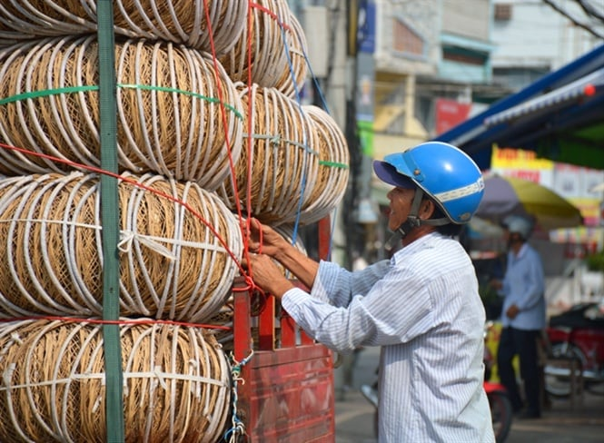
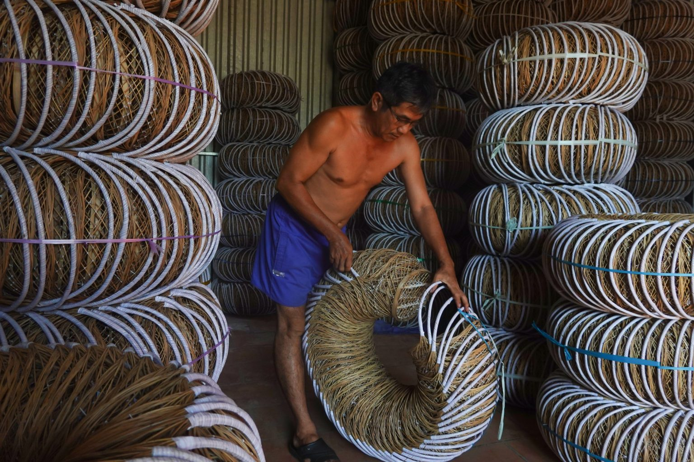
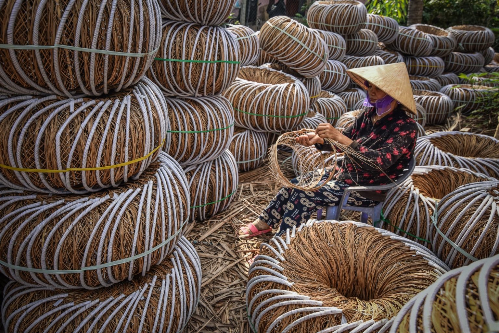
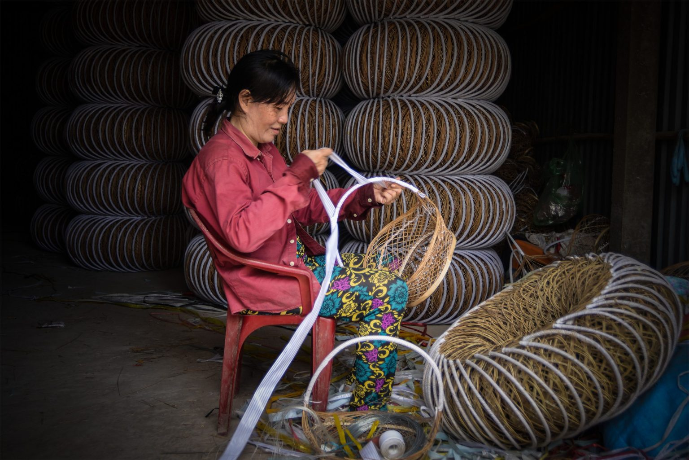

Nằm yên bình bên dòng sông Tiền thơ mộng, làng nghề đan giỏ cọng dừa Hưng Phong, huyện Giồng Trôm, tỉnh Bến Tre từ lâu đã trở thành điểm đến thu hút du khách bởi nét đẹp truyền thống và tinh hoa thủ công của người dân nơi đây.
Ẩn mình giữa vẻ đẹp thanh bình của huyện Giồng Trôm, làng nghề đan giỏ cọng dừa Hưng Phong là một trong những viên ngọc quý của văn hóa thủ công Việt Nam. Được hình thành từ năm 1992, làng nghề này đã trải qua ba thập kỷ phát triển, từ những ngày đầu còn đơn sơ đến nay đã trở thành một điểm sáng nổi bật trong ngành nghề thủ công truyền thống. Ban đầu, nghề chỉ phát triển manh nha với một số ít hộ gia đình tham gia vào công việc đan giỏ cọng dừa. Tuy nhiên, nhờ sự kiên trì và sáng tạo không ngừng, người dân Hưng Phong đã biến những cọng dừa tưởng chừng như vô giá trị thành những sản phẩm thủ công tinh xảo, mang lại thu nhập ổn định cho gia đình. Ngày nay, làng nghề không chỉ là nơi lưu giữ những giá trị truyền thống mà còn là điểm đến hấp dẫn cho du khách muốn tìm hiểu và trải nghiệm văn hóa khi đến với Bến Tre.
Dừng chân tham quan làng nghề truyền thống Hưng Phong, du khách sẽ có cơ hội chứng kiến quy trình sản xuất đan giỏ hoàn toàn thủ công - một nghệ thuật đòi hỏi sự tỉ mỉ và khéo léo của người thợ. Và mỗi chiếc giỏ được tạo ra đều trải qua nhiều công đoạn công phu từ khâu chuẩn bị nguyên liệu, cho đến ra nan, cột khung, đan, bính, quấn quay, nứt và cuối cùng là hoàn thiện phần đáy giỏ. Mỗi công đoạn đều được thực hiện thủ công, ẩn chứa tâm huyết và kỹ thuật tinh hoa của người thợ. Nguyên liệu chính để làm giỏ là cọng lá dừa, một loại vật liệu tự nhiên dồi dào tại địa phương. Cọng lá dừa được chọn lọc kỹ càng, sau đó qua các công đoạn xử lý để trở thành những nan dừa mềm dẻo nhưng chắc chắn, sẵn sàng cho quá trình đan lát. Từng nan dừa được đan xen kẽ nhau một cách tỉ mỉ, tạo nên những hoa văn tinh tế trên thân giỏ. Bằng đôi tay khéo léo, người thợ khéo léo quấn quai giỏ, nứt và hoàn thiện phần đáy giỏ. Mỗi chiếc giỏ là kết tinh của sự sáng tạo, kiên nhẫn và tâm huyết của người dân nơi đây, mang theo hương vị của miệt vườn sông nước Bến Tre. Quy trình sản xuất thủ công tỉ mỉ này không chỉ tạo ra những sản phẩm đẹp mắt mà còn giữ gìn giá trị văn hóa truyền thống lâu đời của làng nghề.
Không chỉ nổi tiếng với quy trình sản xuất thủ công tỉ mỉ, làng nghề đan giỏ cọng dừa Hưng Phong còn thu hút du khách bởi sự đa dạng và tinh tế trong từng sản phẩm. Từ những chiếc giỏ đơn giản dùng để đựng trái cây, cho đến những chiếc giỏ cầu kỳ, tinh xảo làm quà tặng hay trang trí nhà cửa, làng nghề đáp ứng mọi nhu cầu thị hiếu của khách hàng. Mỗi sản phẩm đều mang đậm dấu ấn văn hóa và sự sáng tạo của người dân nơi đây. Với đôi bàn tay khéo léo, người thợ đã biến những cọng dừa tưởng chừng bỏ đi thành những chiếc giỏ xinh xắn, độc đáo. Màu sắc tự nhiên của cọng dừa kết hợp với những hoa văn đan lát tinh tế tạo nên vẻ đẹp mộc mạc nhưng không kém phần sang trọng. Kích thước và kiểu dáng của giỏ cọng dừa cũng rất đa dạng, phù hợp với nhiều mục đích sử dụng khác nhau. Từ những chiếc giỏ nhỏ xinh để đựng đồ trang sức, cho đến những chiếc giỏ lớn để đựng trái cây, thực phẩm hay quần áo, du khách có thể dễ dàng lựa chọn được sản phẩm ưng ý. Với sự đa dạng và tinh tế, giỏ cọng dừa Phước Long - Hưng Phong đã trở thành một trong những đặc sản nổi tiếng của Bến Tre, thu hút du khách từ khắp nơi đến tham quan và mua sắm.
Làng nghề đan giỏ cọng dừa không chỉ góp phần bảo tồn và phát huy giá trị văn hóa truyền thống mà còn mang lại nguồn thu nhập ổn định cho người dân địa phương. Nhờ sự cần cù, sáng tạo, những sản phẩm từ cọng dừa đã vươn xa ra thị trường trong và ngoài nước, khẳng định thương hiệu của làng nghề Phước Long – Hưng Phong. Với những chiếc giỏ cọng dừa tinh xảo, người dân nơi đây đã tạo ra công ăn việc làm cho bản thân và gia đình, góp phần nâng cao đời sống vật chất. Làng nghề cũng thu hút du khách đến tham quan và mua sắm, thúc đẩy phát triển kinh tế địa phương. Bên cạnh giá trị kinh tế, làng nghề đan giỏ cọng dừa còn mang đậm giá trị văn hóa. Đây là nghề truyền thống được lưu truyền từ bao đời nay, thể hiện sự sáng tạo và khéo léo của người dân Bến Tre. Mỗi sản phẩm đều mang hương vị của miệt vườn sông nước, là món quà ý nghĩa dành tặng người thân, bạn bè. Làng nghề đan giỏ cọng dừa Phước Long - Hưng Phong là điểm đến lý tưởng cho những ai yêu thích khám phá văn hóa và tìm kiếm những sản phẩm thủ công độc đáo. Đến đây, du khách không chỉ được tận mắt chứng kiến quy trình sản xuất tinh xảo mà còn có cơ hội mua sắm những sản phẩm chất lượng với giá cả hợp lý. Làng nghề còn mang đến cho du khách những trải nghiệm thú vị, giúp họ hiểu thêm về văn hóa và con người Bến Tre.
